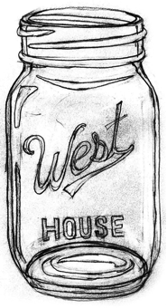

{% import "macros.html" as macros %}
<!DOCTYPE html>
<html lang="en">
    <head>
        <meta charset="utf-8">
        <meta http-equiv="X-UA-Compatible" content="IE=edge">
        <meta name="viewport" content="width=device-width, initial-scale=1">
        <!-- The above 3 meta tags *must* come first in the head; any other head content must come *after* these tags -->
        <meta name="description" content="">
        <meta name="author" content="">
        <link rel="icon" href="../../favicon.ico">

        <title>WH Songbook</title>

        <!-- Bootstrap core CSS -->
        <link href="../static/css/bootstrap.min.css" rel="stylesheet">

        <!-- IE10 viewport hack for Surface/desktop Windows 8 bug -->
        <link href="../static/css/ie10-viewport-bug-workaround.css" rel="stylesheet">

        <!-- Custom styles for this template -->
        <link href="../static/css/index.css" rel="stylesheet">


    </head>
    <body>

        <div class="box">
            <div class="image-bg-fluid-height">
                
            </div>
            <div class="cover">
                <h3 class="masthead-brand">West House Songbook</h3>
                <ul>
                    <li>{{ macros.nav_button('browse', 'Browse') }}</li>
                    <li>{{ macros.nav_button('about', 'About') }}</li>
                    <li>{{ macros.nav_button('random', 'Random') }}</li>
                </ul>
            </div>
        </div>


        <!-- Bootstrap core JavaScript
             ================================================== -->
        <!-- Placed at the end of the document so the pages load faster -->
        <script src="http://ajax.googleapis.com/ajax/libs/jquery/1.11.3/jquery.min.js"></script>
        <script>window.jQuery || document.write('<script src="../static/js/vendor/jquery.min.js"><\/script>')</script>
        <script src="../static/js/bootstrap.min.js"></script>
        <!-- Just to make our placeholder images work. Don't actually copy the next line! -->
        <script src="../static/js/vendor/holder.min.js"></script>
        <!-- IE10 viewport hack for Surface/desktop Windows 8 bug -->
        <script src="../static/js/ie10-viewport-bug-workaround.js"></script>
    </body>
</html>
